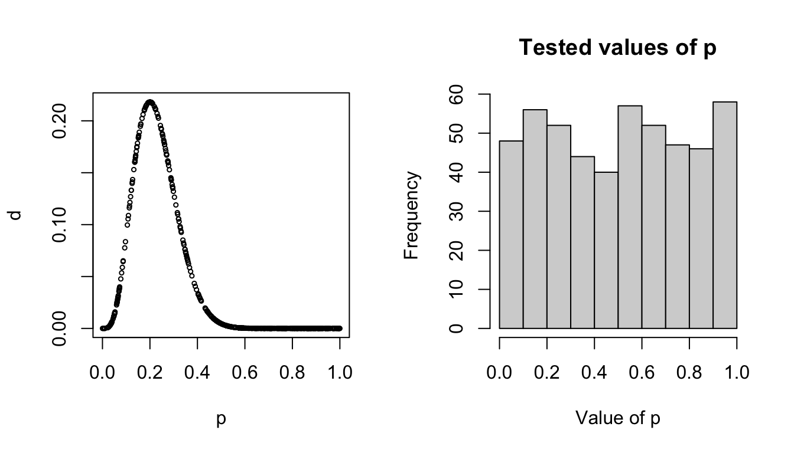

Lab 3: Basic MCMC
Clark Rushing and Heather Gaya
Lab3_BasicMCMC.RmdIn this activity, we will use R to create a simple
Metropolis sampler to estimate the posterior distributions of the
parameters in a linear regression model. This sounds like a giant task
but once you understand the mechanisms, it’s not too hard.
Objectives
Create a Metropolis sampler to estimate the parameters of a linear regression model
Create custom functions to avoid copying/pasting code
Markov chain Monte Carlo
The basic steps of the Metropolis sampler are:
Choose an initial value for \theta (call it \theta^1)
Propose a new value \theta^* from a proposal distribution
Compute the probability of accepting \theta^* using the joint distributions evaluated at \theta^* and the previous value \theta^{k-1}
Accept \theta* (i.e., \theta^{k} = \theta^*) with the probability estimated in step 2, otherwise retain the previous value (i.e., \theta^{k} = \theta^{k-1}
Why Bother?
First, let’s simulate some fake data from a binomial distribution as an example. Maybe we’re flipping a coin and want to know if it’s fair. We flip it 20 times and these are the results we get:
Let’s take a look at our data with a table:
table(x)
#> x
#> 0 1
#> 16 4Looks like we have 16 zeros (“failures”) and 4 1’s (“successes”). Probably not a fair coin. But what if we want to estimate the probability of success? If it were truly fair, we’d expect a probability of 0.5.
If we reallllllly wanted to, we could try to figure this out entire “by hand” by guessing a bunch of values and using the probability density function of a binomial distribution to tell us if we were close to the correct value. Here’s how that might look:
We know that the equation for a binomial distribution with size 20 is: \frac{20!}{(20-X!)X!}(p^X)(1-p)^{20-X}
So how do we go about finding p? Well, to start, what’s the probability density of 4 successes if p = .1?
dbinom(4, 20, .1)
#> [1] 0.08978Okay, not too high.
How about if p = .4?
dbinom(4, 20, .4)
#> [1] 0.03499Hmm, a little lower.
What about p = .7?
dbinom(4, 20, .7)
#> [1] 5.008e-06Oof, lower again.
So we could do this over and over and over again and eventually we’d see that some numbers were larger (yay) and some were smaller (less good answers). If we guessed enough numbers, we’d probably find a few that were highest and we could say that p was pretty close to whatever that value was.
Obviously picking random values of p by hand isn’t very efficient. Let’s have a function do it for us and graph what the result is:
pick.ps <- function(n){
p <- runif(n, min = 0, max = 1)
d <- dbinom(4,20,p)
return(data.frame(p = p, d=d))
}
We can see that the value of p is probably close to .3 because that’s where the highest probability density was, but we can also see that this method tried a bunch of points (AKA wastes a lot of time) over around values that we basically know aren’t going to be good answers. For instance, we’re pretty sure this coin isn’t going to have a success probability of .9, so we would kind of prefer that the model not spend so much time testing values over there.
Is there a way we could have the function spend more time in “good” areas, trying to estimate the exact value of p and less time in “bad” areas where the answer is very unlikely? And what about for equations where the math isn’t just one distribution but a bunch of distributions combined?
Why yes! It’s called MCMC. And it makes our ineffective plug-and-chug methods much faster.
Seed count model
When we generated the seed count data, we did so assuming a linear model that linked pollination visits to seed counts:
y_i = \alpha + \beta * x_i + \epsilon_i \epsilon_i \sim Normal(0, \sigma^2)
This model includes 3 random variables that we want to estimate posterior distributions for: \alpha, \beta, and \sigma^2 (remember that the y_i and x_i are observed and therefore treated as fixed and known rather than random variables governed by probability distributions). So:
[\alpha, \beta, \sigma^2|y_i] \propto [y_i|\alpha, \beta, \sigma^2][\alpha][\beta][\sigma^2] \tag{1}
Sticking with the data generating model, we can define the likelihood of our model using a Normal distribution. For given values of \alpha, \beta, and \sigma^2, we estimate the likelihood as:
[y_i|\alpha, \beta, \sigma] = \prod_{i=1}^N Normal(y_i|\alpha + \beta \times x_i, \sigma^2)
Because \alpha, \beta, and \sigma^2 are random variables, we must define prior distributions for them. Because \alpha and \beta can be positive or negative real numbers (we’ll ignore for now that we know the sign of each in our data generating model), we can use normal priors:
[\alpha] = Normal(\alpha|0, 50)
[\beta] = Normal(\beta|0, 50)
These are relatively non-informative priors for the intercept and slope coefficients.
We also need a model for \sigma.
Side note: A lot of MCMC codes (such as the BUGS language) model a normal distribution as Normal(mean, precision) where precision = (1/\sigma^2).
For \sigma, we will use a relatively diffuse gamma prior:
[\sigma] = Gamma(\sigma|1, 1)
Custom functions
At each iteration of the sampler, we will need to perform the same set of tasks, namely estimating the likelihood and joint distributions for the proposed and current parameter values. We could do this by copying and pasting the code necessary for these calculations at each point in the sampler code where we need them. However, any time you find yourself copying and pasting the same code more than once or twice, it’s a good idea to consider wrapping that code in a function, which will do here.
Function for calculating likelihood
Given values of \alpha, \beta, and \sigma, we can estimate the likelihood in
R using the dnorm() function (note that we
will take the sum of the log likelihoods rather than the product of the
likelihoods to avoid numerical issues):
# Calculate the predicted count for each flower
lp <- alpha + beta * x
# Calculate the likelihood of our data given the model
sum(dnorm(y, lp, sigma, log = TRUE)) To turn this code into a function, first open a new script and call
it calc_like.R. Save it in the R/
sub-directory. This script will contain the function code. The function
code is:
calc_like <- function(y, alpha, beta, sigma, x) {
lp <- alpha + beta * x
ll <- sum(dnorm(y, lp, sigma, log = TRUE))
return(ll)
}This allows us to put in the data (y), covariate values
(x), and values of \alpha,
\beta, and \sigma as arguments and the function will
return the log likelihood.
Save this code in the script and then close the script.
Functions for calculating prior probabilities
We also need functions to estimate the prior probabilities for
specific values of \alpha, \beta, and \sigma. Create a new script titled
priors.R and save it to the R/ sub-directory.
The following functions will take values of each parameter and estimate
the prior probability given the prior distributions we defined
above:
priorAlpha <- function(alpha, mu = 0, sigma = 50){
prob <- dnorm(alpha, mu, sigma, log = TRUE)
return(prob)
}
priorBeta <- function(beta, mu = 0, sigma = 50){
prob <- dnorm(beta, mu, sigma, log = TRUE)
return(prob)
}
priorsigma <- function(sigma, shape1 = 0.1, rate1 = 0.1){
prob <- dgamma(sigma, shape = shape1, rate = rate1, log = TRUE)
return(prob)
} Metropolis sampler
Now we are ready to create the sampler. Remember that when there are multiple parameters, we need to define the full conditionals. For each random variable in the model, we define the full conditional by including any element on the right hand side of eq. 1 that contains the parameter (note the change to \sigma):
[\alpha|.] = [y_i|\alpha, \beta, \sigma][\alpha] [\beta|.] = [y_i|\alpha, \beta, \sigma][\beta]
[\sigma|.] = [y_i|\alpha, \beta, \sigma][\sigma]
In the sampler, we loop over each parameter, going through the
Metropolis steps for each and treating the other parameters as known
(based on their current value in the chain). If this in not clear,
walking through the R code will hopefully make it more
concrete (don’t worry about trying to copy and run the code in this
section, which is simply for illustration. In the next section, we will
slightly modify this code to run the sampler for our seed count
data).
First, we set the length of our chains, set the tuning parameter for the proposal distribution, and create an empty data frame to store the samples and a binary variable for estimating the acceptance rate:
## Length of chains
nIter <- 10000
## Tuning parameter
tuning <- 1.5
## Empty data frame to store posterior samples of each parameter
mcmc_df <- data.frame(x = 1:nIter,
alpha = numeric(nIter),
beta = numeric(nIter),
sigma = numeric(nIter),
accept.alpha = 0,
accept.beta = 0,
accept.sigma = 0)Next, we will randomly generate initial values for each parameter. Remember that these are quite big numbers in the data generating model so we will create initial values of the same magnitude:
## Initial values
mcmc_df$alpha[1] <- runif(1, 200, 300)
mcmc_df$beta[1] <- runif(1, 25, 75)
mcmc_df$sigma[1] <- runif(1, 0, 10)The final “set up” step is to estimate the likelihood of our data
given these initial values. To do this, we use the
calc_like() function we created earlier:
## Initial likelihood
likelihood <- calc_like(y = y, alpha = mcmc_df$alpha[1],
beta = mcmc_df$beta[1], sigma = mcmc_df$sigma[1],
x = x) Now we create the actual sampler. Below, we will create a loop that implements these steps for each iteration of the chains. Here, we will simply go through each step to make sure you understand what it’s doing. We’ll start by going through the Metropolis steps for \alpha (though remember the order doesn’t matter):
########################
#### 1. Update alpha
########################
## 1a: Generate candidate value
cand <- rnorm(1, mcmc_df$alpha[i - 1], tuning)
## 1b: Calculate likelihood at candidate value
cand_like <- calc_like(y = y, alpha = cand, beta = mcmc_df$beta[i-1], sigma = mcmc_df$sigma[i-1], x = x)
## 1c: Calculate likelihood * prior at old value and candidate value
jointOld <- likelihood + priorAlpha(mcmc_df$alpha[i-1])
jointCand <- cand_like + priorAlpha(cand)
## 1d: Acceptance probability
R <- min(1, exp(jointCand - jointOld))
## 1e: Decide whether to accept or not
if(R > runif(1)) { # if accepted
mcmc_df$alpha[i] <- cand
likelihood <- cand_like
} else {
mcmc_df$alpha[i] <- mcmc_df$alpha[i-1]
}Let’s go through this line by line. In step 1a, we
generate a new value of \alpha from a
normal distribution centered on the previous value. Remember that the
tuning parameter we set earlier determines how big the jumps are between
the current and proposed values.
In step 1b, we use the calc_like() function
to estimate the likelihood of our data given the new value of \alpha and the previous values of \beta and \sigma. This is what we mean when we say that
we treat the other parameters as fixed and known.
In step 1c, we estimate the joint probability of both
the current and proposed values by adding the log likelihood to the log
prior probability (note that sum of the log values is the same as the
product of the probabilities).
In step 1d, we estimate the probability of accepting the
new value. Note that if the proposed value is more likely than the
current value (R > 1), this function
will return 1. Otherwise, it returns the ratio. The closer the joint
probabilities are, the closer R will be
to 1. The less likely the proposed value is relative to the current
value, the smaller R will be. This
means that we will be much less likely to accept new values of \alpha that are a lot less probable than the
current value (though not impossible).
Finally, in step 1e we accept or reject the proposed
value. Note that we compare R to a
random value generated from a Uniform(0,1) distribution. If R=1, it will always be greater than this
value so we will always accept the proposed value
(mcmc_df$alpha[i] <- cand) and we update the current
likelihood to match the current value of \alpha. If R<1, it turns out testing whether R is less than our randomly generated value
from Uniform(0,1) ensures that we
accept \alpha with probability R (I’ll leave it to you to prove this based
on the properties of the uniform distribution).
Next we do the same thing for \beta,
using the new value of alpha
(mcmc_df$alpha[i]) and the previous value of \sigma
(mcmc_df$sigma[i - 1]):
########################
#### 2. Update beta
########################
## 2a: Generate candidate value
cand <- rnorm(1, mcmc_df$beta[i - 1], tuning)
## 2b: Calculate likelihood at candidate value
cand_like <- calc_like(y = y, alpha = mcmc_df$alpha[i], beta = cand,
sigma = mcmc_df$sigma[i-1], x = x)
## 2c: Calculate likelihood * prior at old value and candidate value
jointOld <- likelihood + priorBeta(mcmc_df$beta[i-1])
jointCand <- cand_like + priorBeta(cand)
## 2d: Acceptance probability
R <- min(1, exp(jointCand - jointOld))
## 2e: Decide whether to accept or not
if(R > runif(1)) { # if accepted
mcmc_df$beta[i] <- cand
likelihood <- cand_like
} else {
mcmc_df$beta[i] <- mcmc_df$beta[i-1]
}Finally, we update \sigma using the new values of both \alpha and \beta. The only difference here is that because \sigma has to be >0, the normal proposal distribution we used for \alpha and \beta will not work (it could create negative values). As we learned in lecture, you could create a proposal distribution that generates positive value (e.g., gamma) and use moment matching to estimate the parameters with regards to the current \sigma and the tuning parameter. We’ll use a slightly less efficient approach here to demonstrate there are different ways to enforcing the behavior we want in the sampler. In this cases, will simply add a small value to the current \sigma and automatically reject the proposed value if it’s less than 0. The small value can be negative or positive to allow us to explore the posterior.
########################
#### 3. Update sigma
########################
## 3a: Generate candidate value
cand <- mcmc_df$sigma[i-1] + runif(1, -.1, 0.1)
# If candidate value is outside [0,Inf], keep the old value of sigma
if (cand < 0) {
mcmc_df$sigma[i] <- mcmc_df$sigma[i-1]
} else {
## 3b: Calculate likelihood at candidate value
cand_like <- calc_like(y = y, alpha = mcmc_df$alpha[i], beta = mcmc_df$beta[i],
sigma = cand, x = x)
## 3c: Calculate likelihood * prior at old value and candidate value
jointOld <- likelihood + priorsigma(mcmc_df$sigma[i-1])
jointCand <- cand_like + priorsigma(cand)
## 3d: Acceptance probability
R <- min(1, exp(jointCand - jointOld))
## 3e: Decide whether to accept or not
if(R > runif(1)) { # if accepted
mcmc_df$sigma[i] <- cand
likelihood <- cand_like
} else {
mcmc_df$sigma[i] <- mcmc_df$sigma[i-1]
}
}
}Running the sampler
Finally, we can run the sampler. Create a new script called
metroplis.R (or something similar) and put it in
scripts/. First, we will load the packages we need and use
the source() function to read in our custom functions
(source() runs the .R files given in the
argument which in this case will make the functions available for our
sampler):
Next, read in the simulated data and set the initial values for the MCMC:
## Read simulated data
sim_dat <- readRDS("data/sim_seed_counts.rds")
## Length of chains
nIter <- 10000
## Tuning parameter
tuning <- 1.5
## Empty data frame to store posterior samples of each parameter
mcmc_df <- data.frame(x = 1:nIter,
alpha = numeric(nIter),
beta = numeric(nIter),
sigma = numeric(nIter),
accept.alpha = 0,
accept.beta = 0,
accept.sigma = 0)
## Initial values
mcmc_df$alpha[1] <- runif(1, 200, 300)
mcmc_df$beta[1] <- runif(1, 25, 75)
mcmc_df$sigma[1] <- runif(1, 0, 10)
## Initial likelihood
likelihood <- calc_like(y = sim_dat$y, alpha = mcmc_df$alpha[1],
beta = mcmc_df$beta[1], sigma = mcmc_df$sigma[1],
x = sim_dat$visits.c) Now take the sampler code and put it inside a for loop
to create the chains. Note that in the likelihood functions we will need
to reference our simulated data and covariates:
for(i in 2:nIter){
########################
#### 1. Update alpha
########################
## 1a: Generate candidate value
cand <- rnorm(1, mcmc_df$alpha[i - 1], tuning)
## 1b: Calculate likelihood at candidate value
cand_like <- calc_like(y = sim_dat$y, alpha = cand,
beta = mcmc_df$beta[i-1], sigma = mcmc_df$sigma[i-1],
x = sim_dat$visits.c)
## 1c: Calculate likelihood * prior at old value and candidate value
jointOld <- likelihood + priorAlpha(mcmc_df$alpha[i-1])
jointCand <- cand_like + priorAlpha(cand)
## 1d: Acceptance probability
R <- min(1, exp(jointCand - jointOld))
## 1e: Decide whether to accept or not
if(R > runif(1)) { # if accepted
mcmc_df$alpha[i] <- cand
likelihood <- cand_like
mcmc_df$accept.alpha[i] <- 1
} else {
mcmc_df$alpha[i] <- mcmc_df$alpha[i-1]
}
########################
#### 2. Update beta
########################
## 2a: Generate candidate value
cand <- rnorm(1, mcmc_df$beta[i - 1], tuning)
## 2b: Calculate likelihood at candidate value
cand_like <- calc_like(y = sim_dat$y, alpha = mcmc_df$alpha[i], beta = cand,
sigma = mcmc_df$sigma[i-1], x = sim_dat$visits.c)
## 2c: Calculate likelihood * prior at old value and candidate value
jointOld <- likelihood + priorBeta(mcmc_df$beta[i-1])
jointCand <- cand_like + priorBeta(cand)
## 2d: Acceptance probability
R <- min(1, exp(jointCand - jointOld))
## 2e: Decide whether to accept or not
if(R > runif(1)) { # if accepted
mcmc_df$beta[i] <- cand
likelihood <- cand_like
mcmc_df$accept.beta[i] <- 1
} else {
mcmc_df$beta[i] <- mcmc_df$beta[i-1]
}
########################
#### 3. Update sigma
########################
## 3a: Generate candidate value
cand <- mcmc_df$sigma[i-1] + runif(1, -1, 1)
# If candidate value is outside [0,Inf], keep the old value of sigma
if (cand < 0) {
mcmc_df$sigma[i] <- mcmc_df$sigma[i-1]
} else {
## 3b: Calculate likelihood at candidate value
cand_like <- calc_like(y = sim_dat$y, alpha = mcmc_df$alpha[i], beta = mcmc_df$beta[i],
sigma = cand, x = sim_dat$visits.c)
## 3c: Calculate likelihood * prior at old value and candidate value
jointOld <- likelihood + priorsigma(mcmc_df$sigma[i-1])
jointCand <- cand_like + priorsigma(cand)
## 3d: Acceptance probability
R <- min(1, exp(jointCand - jointOld))
## 3e: Decide whether to accept or not
if(R > runif(1)) { # if accepted
mcmc_df$sigma[i] <- cand
likelihood <- cand_like
mcmc_df$accept.sigma[i] <- 1
} else {
mcmc_df$sigma[i] <- mcmc_df$sigma[i-1]
}
}
}At this point, you should be able to run the script from start to finish and create the posterior samples for each parameter.
Checking the output
Now we can determine whether the sampler returns the data generating values from our data simulation. When assessing the output of MCMC chains, a good first diagnostic is usually checking the trace plots:
ggplot(mcmc_df, aes(x = x, y = alpha)) + geom_path()The chain for \alpha moved rapidly
from the initial value to the stationary posterior distribution but
those first few samples will obviously bias our parameter estimates if
we include them in the posterior. Let’s remove them by using the
dplyr function slice():
mcmc_df <- dplyr::slice(mcmc_df, 1000:nIter)
ggplot(mcmc_df, aes(x = x, y = alpha)) + geom_path()That looks better. Now we can estimate the mean and 95% credible interval of the posterior:
mean(mcmc_df$alpha)
#> [1] 251.3
quantile(mcmc_df$alpha, probs = c(0.025, 0.975))
#> 2.5% 97.5%
#> 250.2 252.4Pretty close to the data generating value of 250. Now let’s check \beta:
ggplot(mcmc_df, aes(x = x, y = beta)) + geom_path()and
mean(mcmc_df$beta)
#> [1] 49.1
quantile(mcmc_df$beta, probs = c(0.025, 0.975))
#> 2.5% 97.5%
#> 48.02 50.17Also pretty close to the data generating value of 50. Finally, \sigma
ggplot(mcmc_df, aes(x = x, y = sigma)) + geom_path()
mean(mcmc_df$sigma)
#> [1] 7.424
quantile(mcmc_df$sigma, probs = c(0.025, 0.975))
#> 2.5% 97.5%
#> 6.690 8.254Wasn’t that easy?
Homework
- In simulation, we set \alpha = 250,
and we provided a reasonable, diffuse prior in the example above. But
what happens if we give a restrictive (and wrong) prior for \alpha? Change your
priorAlphafunction to instead match \alpha \sim Uniform(0, 150). Make sure to also change this line to match the new prior:
mcmc_df$alpha[1] <- runif(1, 200, 300) #change this to something reasonableRun your sampler again and print out the chain for \alpha. What do you see?
- Go back to the original prior for alpha. We didn’t discuss it much in lab, but the tuning parameter affects how fast the sampler will explore the state space. If it’s really small, it might take forever. If it’s really large, it can make giant jumps and reject a lot of possible values, which wastes time and causes the sampler to ‘stall’. We can see what the acceptance rate of our sampler was by calculating the mean of the accept.alpha, accept.beta and accept.sigma columns. Run the sampler with a tuning parameter of .05 and 50. Calculate the acceptance rates for each of the 3 parameters. What do you notice?
Homework (+1 Bonus Point)
- When we generated the seed count data, we did so assuming a linear model that linked pollination visits to seed counts: y_i = \alpha + \beta * x_i + \epsilon_i. Because we used simulated data, we know this model ahead of time. However in real life, we wouldn’t know the true model ahead of time and might try to fit a different model to the data. Adding on to what we already have, create an MCMC that also includes a second beta term that looks at visits squared: y_i = \alpha + \beta * x_i + \beta_2 * x_i^2 + \epsilon_i. Run the MCMC and look at the output. What does the MCMC estimate for \beta_2?
Hint: Approach this problem one step at a time.
- Begin by changing the mcmc_df to allow you to store an additional beta parameter.
- Next, choose an initial value for beta2.
- Change your calc_like function to include beta2. Remember that lp will just be alpha + betax + beta2x*x.
- Optionally, create another function for priorBeta2 (or just re-use the priorBeta function for beta2 as well).
Next create a section in your sampler to update Beta2. It will look almost identical to the one already present for Beta.
- Run your model.
- Finally, use the quantile function to look at the estimate: quantile(mcmc_df$beta2, probs = c(0.025,0.5, 0.975))
- On a 1-10 scale, with 1 being the worst week ever and 10 being the best, how would you rate this week’s content? What lingering questions/confusion about the lecture or lab do you still have?